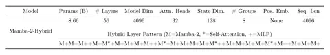

SSM вроде Mamba — неплохая альтернатива трансформерам, но с ними всё не так просто. Сегодняшняя статья об этом.
Трансформеры, такие как BERT и GPT, показывают отличные результаты в NLP-задачах, но испытывают сложности при работе с большими контекстами —при увеличении длины входного текста качество начинает деградировать. Причина в росте вычислительных затрат и сложности поддержания высоких скоростей обучения и инференса.
Решают проблему разными оптимизациями: линейными аттеншн-механизмами, структурированными масками токенов. Однако у этих способов есть ограничения. Более удачная альтернатива — Mamba и Mamba 2. О ней мы уже писали в этом посте.
Mamba и Mamba 2 используют иной подход к обработке длинных текстов, основываясь на структурированных состояниях. В отличие от трансформеров, они не требуют обработки всех токенов одновременно.
Авторы статьи сравнили Mamba, Mamba 2 и классический трансформер на нескольких задачах. В некоторых результаты Mamba были сопоставимы с результатами трансформеров, но Mamba тоже испытывает трудности при работе с большими контекстами.
Для решения проблемы авторы предложили гибридную модель — смесь Mamba 2, селф-атеншн и MLP-слоёв. У первой модели было 130М параметров с 24 слоями. Доля селф-аттеншн и MLP среди них менялась. Наименьшей потери валидации удалось достичь при 8% селф-аттеншн слоёв. Эти данные подтвердили эксперименты и с моделью на 840М параметров. При этом доля MLP достигала около 50%, что позволило ускорить инференс на 20%.
Авторы натренировали 8B-модель Mamba-2-Hybrid. Она сравнялась по качеству с трансформерами. Благодаря замене слоёв аттеншена SSM-слоями в теории можно добиться ускорения x7. Также есть гипотеза, что уменьшение кэша key-value позволит модели использовать более крупные батчи, чем трансформерам, и ещё сильнее ускорить инференс.
Как вам такой подход? Делитесь впечатлениями в комментариях!
Разбор подготовил
Душный NLP
